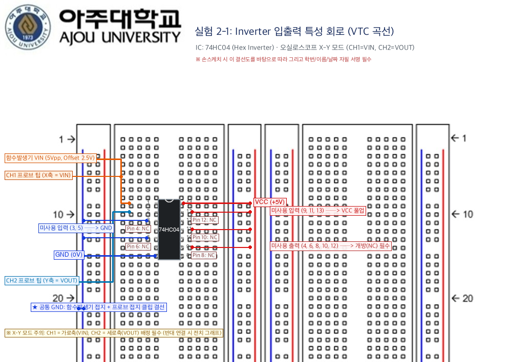
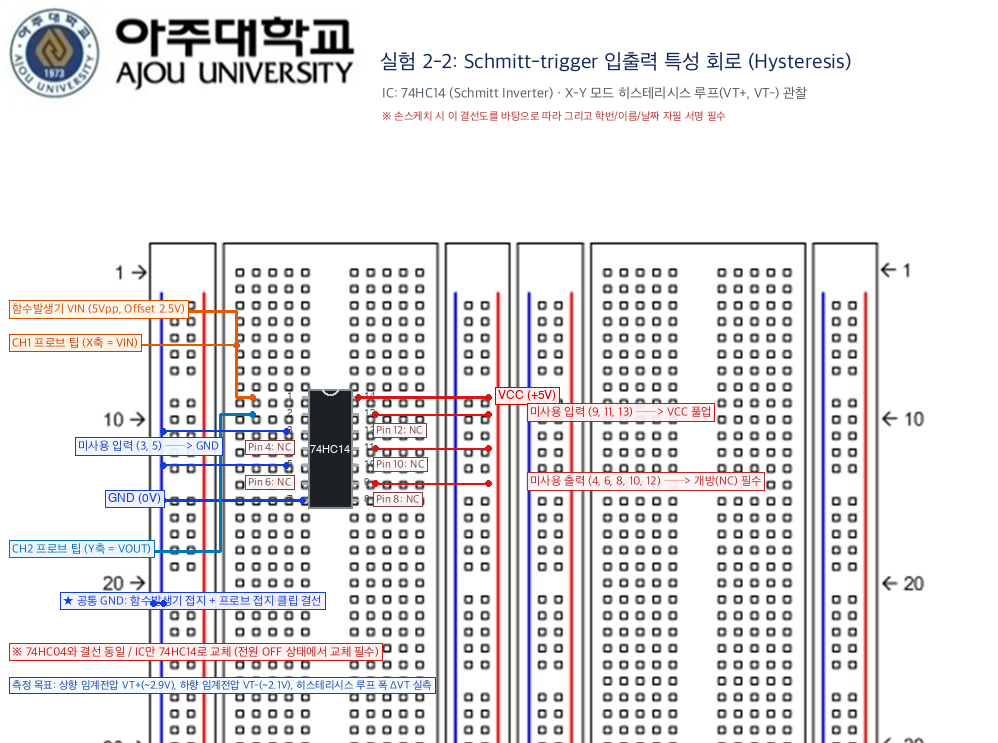
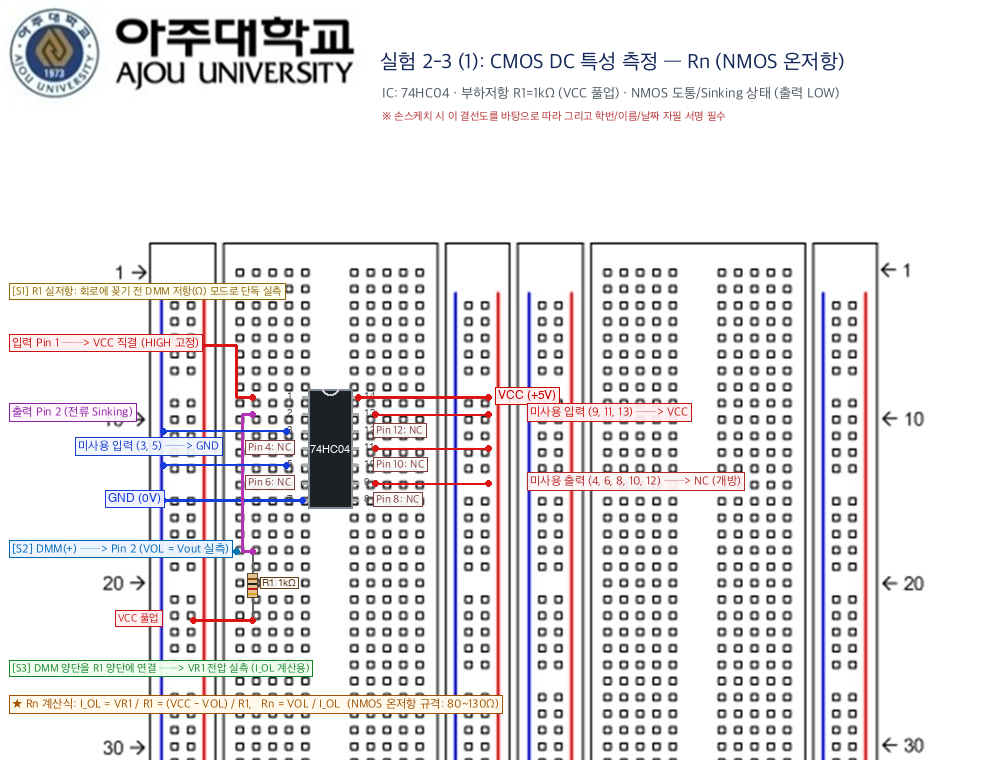
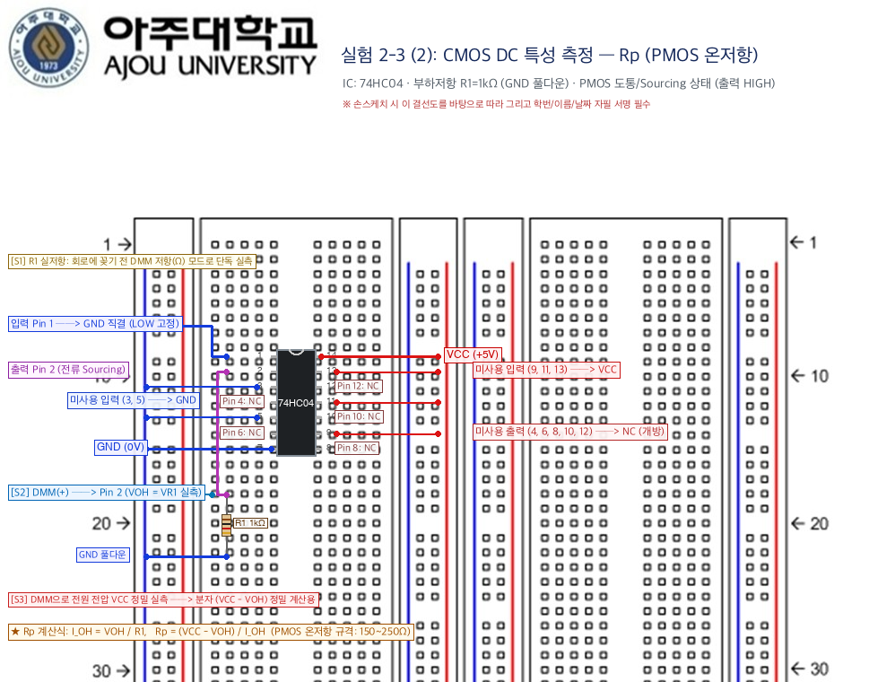
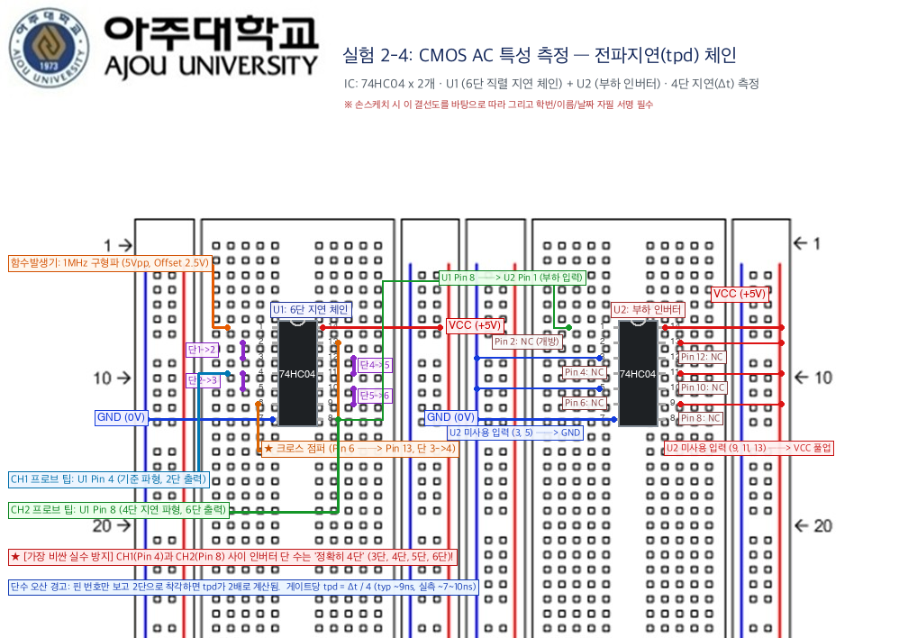

진리표 — 확인 칸: ✓ 일치 / 값 = 불일치 시 실제로 관찰한 값 / 공란 = 미확인. 표를 통째로 진행하지 않았으면 그 표 아래에 진행하지 않았음 이라고 적는다.
스텝표 — 회색 칸에 읽은 값을 단위와 함께 적는다 (예: 3.2 V, 47 Ω). 확인 칸이 없다: 대조할 예상값이 없는 표다.
파형 — 격자에 직접 그리고 판독 조건 줄(V/div·time/div·프로브·모드)을 채운다. 조건이 없으면 결과보고서에서 화면의 칸을 볼트로 환산할 수 없다.
| 순서 | 회로 | 쓰는 IC | 기록할 표 |
|---|---|---|---|
| 1/5 | E2.P1 · Inverter 의 입출력 특성 확인 (교안 p9) | 74HC04 | T1 74HC04 VTC (X-Y 트레이스) |
| 2/5 | E2.P2 · Schmitt-trigger 의 입출력 특성 확인 (교안 p10) | 74HC14 | T2 74HC14 히스테리시스 루프 (X-Y 트레이스), T3 74HC14 문턱 판독 |
| 3/5 | E2.P3-1 · CMOS 의 DC 특성 확인 — Rn (교안 p11) | 74HC04 | T4 Rn 추출 |
| 4/5 | E2.P3-2 · CMOS 의 DC 특성 확인 — Rp (교안 p12) | 74HC04 | T5 Rp 추출 |
| 5/5 | E2.P4 · CMOS 의 AC 특성 확인 — tpd (교안 p13~p14) | 74HC04 | T6 인버터 체인 파형 (CH1 pin 4 / CH2 pin 8), T7 tpd 측정과 데이터시트 대조 |
이 주차의 결선도는 논리 배선이 아니라 계측 셋업이다. 게이트 하나짜리 회로가 대부분이라 "어느 핀을 어디에 꽂나" 는 몇 줄로 끝나고, 실제로 실험을 망치는 것은 프로브를 어디에 무엇을 기준으로 대는가, 함수발생기가 무엇을 내보내는가, 미사용 입력핀을 어떻게 처리했는가 셋이다. 그래서 항목마다 배선 다음에 계측 접점을 반드시 적는다.
교안 p8 원문: "74HC04N, SN74HC14의 사용하지 않는 입력 핀의 입력 값은 VCC 또는 GND에 연결한다 (Pull up/Pull down)".
실험01/결선도/netlist.md 의 "미사용 입력핀은 전부 GND" 규칙을 복사해 오면 교안과 어긋난다. 인버터는 입력이 VCC 든 GND 든 출력이 확정되므로 둘 다 정답이고, 교안 도면은 실제로 둘을 섞는다.
교안 p8 도면은 손글씨로 "실험에서 사용하는 인버터 1개"(pin 1·2 를 가리킴)라고 적혀 있다 — 즉 이 도면이 곧 E2.P1·E2.P2·E2.P3-1·E2.P3-2 의 미사용핀 처리 지시다 (그 네 항목 모두 인버터를 한 개만 쓴다). 도면을 vision 으로 판독한 결과:
| 핀 | 신호 | p8 도면의 처리 |
|---|---|---|
| 3 | 2A (입력) | GND |
| 5 | 3A (입력) | GND |
| 9 | 4A (입력) | VCC |
| 11 | 5A (입력) | VCC |
| 13 | 6A (입력) | VCC |
| 4, 6, 8, 10, 12 | 2Y·3Y·4Y·5Y·6Y (출력) | 개방 (도면에 X 표) |
74HC04 (hex inverter, DIP-14) — 데이터시트 p4 Fig.3 확인
| 게이트 | 입력 → 출력 | 게이트 | 입력 → 출력 |
|---|---|---|---|
| 1 (1A/1Y) | 1 → 2 | 4 (4A/4Y) | 9 → 8 |
| 2 (2A/2Y) | 3 → 4 | 5 (5A/5Y) | 11 → 10 |
| 3 (3A/3Y) | 5 → 6 | 6 (6A/6Y) | 13 → 12 |
VCC 14, GND 7.
74HC14 (Schmitt-trigger hex inverter, DIP-14)
| 게이트 | 입력 → 출력 | 근거 |
|---|---|---|
| 1 (1A/1Y) | 1 → 2 | 교안 p10 회로도로 확인 |
| 2~6 | 3 → 4, 5 → 6, 9 → 8, 11 → 10, 13 → 12 | 가정 (74HC04 와 동일 배치) — M1 |
VCC 14, GND 7 — 교안 p10 회로도로 확인.
| 부품 | 수량 | 근거 |
|---|---|---|
| 74HC04 (74HC04N, DIP-14) | 2개 | 교안 p13 이 U1·U2 두 패키지를 동시에 요구한다. E2.P1·E2.P3-1·E2.P3-2 는 이 중 한 개를 재배선해 쓴다 |
| 74HC14 (SN74HC14, DIP-14) | 1개 | 교안 p10 |
| 저항 1kΩ | 1개 | 교안 p11·p12 의 R1. 두 항목이 순차라 같은 저항을 옮겨 쓴다 |
| 함수발생기(파형발생기) | 1대 | 교안 p9·p10(사인파), p13(사각파 1MHz) |
| 오실로스코프 (2채널) | 1대 | 교안 p9·p10(X-Y), p14(2채널 지연) |
| DMM | 1대 | 교안 p11·p12 |
교안 실험2 14쪽에는 준비물 슬라이드가 아예 없다(실험1 p10, 실험10 p6 에는 있다). 위 표는 회로도 역산이므로 수령 시 대조할 것 → 미확정 M6. 저장소의 과거 실측 사진 from_the_past/정리/소자_데이터시트_및_미디어/2_실측_오실로스코프_파형/전달지연.jpg 에 DIP-14 두 개가 나란히 꽂힌 브레드보드가 찍혀 있어, "실험 4 는 74HC04 두 패키지" 라는 p13 판독과 어긋나지 않는다(방증일 뿐 근거는 p13 회로도다).
| 확인 | 항목 | 내용 | 확인 방법 |
|---|---|---|---|
| M1 | 74HC14 의 게이트 2~6 핀 배치가 확인되지 않았다. 저장소에 74HC14 데이터시트가 없고, 교안 p10 회로도는 pin 1(입력)·pin 2(출력)·pin 14(VCC)·pin 7(GND) 만 라벨한다. 나머지 열 개 핀은 74HC04 와 동일 배치라고 가정했다 | 실물 칩 각인(예: SN74HC14N) 확인 후 벤더 데이터시트 대조. 대조 전에는 미사용핀을 VCC/GND 에 꽂지 말고, 최소한 pin 1·2·7·14 만으로 먼저 동작을 확인할 것 | |
| M2 | 74HC14 의 V_T+·V_T- 수치가 교안에도 저장소에도 없다. 교안 p4 는 정의와 그림만 주고 값을 주지 않는다 | 예상값을 적지 않는다. 실측값을 명세 T3 에 기록하고, 나중에 벤더 데이터시트를 구하면 그때 대조한다 | |
| M3 | 실험 1·2 의 사인파 주파수를 교안이 지정하지 않는다. p9·p10 은 파형·Vpp·Voffset 만 쓴다 | X-Y 모드는 주파수에 둔감하므로 아무 값이나 되지만, 너무 높으면 74HC14 루프가 슬루율 때문에 실제보다 넓어 보이고 너무 낮으면 트레이스가 깜빡인다. 주파수를 바꿔 가며 루프 폭이 더 이상 변하지 않는 지점에서 읽는다. 특정 값을 교안 지시인 것처럼 적지 않는다 | |
| M4 | 실험 4 의 "5V amplitude" 에 오프셋이 없다. 실험 1·2 는 Voffset 2.5 를 명시했으므로 실험 4 도 0~5V 를 의도한 것으로 읽었으나, 교안 문면에는 없다. 오프셋 0 이면 입력이 -2.5V 까지 내려가 74HC04 데이터시트 p5 의 입력 보호 다이오드 조건(V_I < -0.5V)에 걸린다 | 음전압이 나가지 않게 오프셋 +2.5V 를 걸고, 전원 인가 전에 오실로스코프로 파형을 먼저 확인한다. 조교에게 "실험 4 도 0~5V 인가" 를 한 번 확인 | |
| M5 | "5V amplitude" 가 Vpp 5V 인지 진폭(peak) 5V(= Vpp 10V) 인지 문면상 갈린다. 실험 1·2 가 Vpp 5V 로 쓴 것과 회로가 5V 로직이라는 점에서 Vpp 5V 로 읽었다 | Vpp 10V 로 두면 VCC 를 넘는 입력이 되어 위쪽 보호 다이오드에도 걸린다. 함수발생기 표시가 Vpp 인지 Amplitude 인지 확인하고 오실로스코프로 실제 진폭을 확인한 뒤 회로에 넣는다 | |
| M6 | 교안 실험2 에 준비물 페이지가 없다. 14쪽 어디에도 부품 목록 슬라이드가 없어(실험1 p10, 실험10 p6 과 대조) 위 부품 수량 표는 회로도 역산이다 | 수령 시 74HC04 가 2개 인지 먼저 확인. 1개만 받으면 E2.P4 를 못 한다 | |
| M7 | I_OL·I_OH 를 어떻게 재라는지 교안이 지정하지 않는다. p11·p12 도면에는 전류계 기호 없이 화살표와 라벨만 있다. 위 계측 표는 R1 양단 전압을 재서 나누는 방식을 기본으로 적었고, 이는 파생이다 | 전류계를 직접 쓸 거라면 직렬로 넣는다. 병렬로 대면 전원이 단락된다. 두 방식의 값이 크게 다르면 R1 실저항(S1)을 다시 잰다 | |
| M8 | 프로브 감쇠비(1:1 / 10:1)를 교안이 지정하지 않는다. E2.P4 에서는 프로브 용량이 C_L 에 직접 들어가 지연을 늘린다(74HC04 데이터시트 p13: C_L 은 지그·프로브 용량 포함) | 10:1 로 두면 용량 부담이 작아 데이터시트 값에 가깝게 나온다. 어느 쪽을 썼는지 결과보고서에 반드시 적을 것 — 안 적으면 측정값이 데이터시트와 벌어진 이유를 나중에 설명할 수 없다 | |
| M9 | 오실로스코프 기종이 저장소 매뉴얼(Agilent InfiniiVision 2000 X 시리즈)과 같다고 가정했다. X-Y 모드의 CH1 = X축, CH2 = Y축 은 그 매뉴얼 p47·p49 근거다 | 실험실 장비가 다른 기종이면 X-Y 축 배정을 그 기종 매뉴얼로 확인. 대부분 CH1 = X 지만, 다르면 명세 T1·T2 의 좌우 판정(V_T+ 가 오른쪽)이 뒤집힌다 |

결선도: 실험02_결선도_인버터_입출력특성.png
| 항목 | 값 | 출처 |
|---|---|---|
| 파형 | 사인파 | 교안 p9 |
| 진폭 | Vpp 5V | 교안 p9 |
| 오프셋 | Voffset 2.5V (→ 0V ~ +5V 스윙) | 교안 p9 |
| 주파수 | 교안에 없음 | → M3 |
| 접지 | 공통 GND |
오프셋 2.5V 가 필수인 이유: 오프셋을 0 으로 두면 -2.5V ~ +2.5V 가 되어 입력이 -0.5V 아래로 내려간다. 74HC04 데이터시트 p5 LIMITING VALUES 는 V_I < -0.5V 에서 입력 보호 다이오드에 전류(I_IK, 절대최대 ±20mA)가 흐른다고 규정한다. 함수발생기가 전류를 제한하지 않으면 입력단이 상한다.
| 채널 | 프로브 팁 | 접지 클립 | 역할 |
|---|---|---|---|
| CH1 | U1 pin 1 (= 함수발생기 출력 노드) | 공통 GND | X 축 = V_IN |
| CH2 | U1 pin 2 | 공통 GND | Y 축 = V_OUT |
출처: manual:p9
판독 조건 — CH1 ______ V/div · CH2 ______ V/div · time/div ______ · 프로브 ______× · 모드 [ ] Y-T [ ] X-Y
캡션: ____________________ 사진 파일: ____________________
사진: 파형 자체가 결과물이다. 파일명 T1 row1.jpg 형식
E2.P1 과 배선이 글자 그대로 같고 칩만 바뀐다. 통제 실험이므로 함수발생기 설정·프로브 위치·미사용핀 처리를 하나도 바꾸지 않는다 — 바꾸면 그림 차이가 칩 때문인지 설정 때문인지 갈리지 않는다.

결선도: 실험02_결선도_슈미트트리거_입출력특성.png
함수발생기 설정·계측 접점은 E2.P1 과 동일하다 (사인파 Vpp 5V, Voffset 2.5V, CH1 → pin 1, CH2 → pin 2, X-Y 모드, 접지 공통).
칩을 바꿔 꽂을 때 전원을 내린다. 전원이 살아 있는 상태로 DIP 를 뽑으면 핀이 순서대로 빠지면서 입력에만 전원이 걸린 순간이 생긴다.
출처: manual:p10
판독 조건 — CH1 ______ V/div · CH2 ______ V/div · time/div ______ · 프로브 ______× · 모드 [ ] Y-T [ ] X-Y
캡션: ____________________ 사진 파일: ____________________
사진: 파형 자체가 결과물이다. 파일명 T2 row1.jpg 형식
출처: manual:p10 (회로·X-Y 설정) + manual:p4 (V_H = V_T+ - V_T- 정의)
| 스텝 | 읽을 값 | 어디를 어떻게 | 기록 |
|---|---|---|---|
| S1 | V_T+ | X-Y 루프의 **오른쪽** 수직변. 커서 X 좌표 | |
| S2 | V_T- | X-Y 루프의 **왼쪽** 수직변. 커서 X 좌표 | |
| S3 | V_H = S1 - S2 | 계산 (교안 p4 정의) | |
| S4 | 루프 상단 V_OUT | 위쪽 수평변의 커서 Y 좌표. 약 VCC 여야 한다 | |
| S5 | 루프 하단 V_OUT | 아래쪽 수평변의 커서 Y 좌표. 약 0V 여야 한다 |
계측기 설정 — 모드·레인지·단위: ________________________________
사진: 스텝마다 1장. 파일명 T3 row3.jpg 형식
| 이상 스텝 | 관찰한 것 | 짐작된 원인 |
|---|---|---|

결선도: 실험02_결선도_DC특성_Rn.png
부하 저항의 위치가 이 항목의 전부다. R1 이 VCC 와 출력 사이에 있으므로 전류가 VCC → R1 → pin 2 → (도통한 NMOS) → GND 로 흐른다. 출력이 전류를 빨아들이는 sinking 상태이고, 그때 NMOS 도통 저항에 걸리는 전압이 V_OL 이다.
| 계측 | DMM(+) | DMM(-) | 모드 | 무엇을 |
|---|---|---|---|---|
| S1 | R1 한쪽 | R1 다른 쪽 | 저항(Ω) | 회로에 꽂기 전 R1 실저항 |
| S2 | U1 pin 2 | 공통 GND | DCV | V_out (= V_OL) |
| S3 | VCC 레일 | U1 pin 2 | DCV | R1 양단 전압 → I_OL 계산용 |
출처: manual:p11
| 스텝 | 측정·계산 | 어디에 대는가 | 기록 |
|---|---|---|---|
| S1 | R1 실저항 | **회로에 꽂기 전** R1 양단, DMM 저항(Ω) 모드 | |
| S2 | V_out (= V_OL) | DMM(+) → U1 pin 2, DMM(-) → 공통 GND, DCV | |
| S3 | R1 양단 전압 | DMM(+) → VCC 레일, DMM(-) → U1 pin 2, DCV | |
| S4 | I_OL = S3 / S1 | 계산. 전류계를 직렬로 끊어 넣어 직접 재도 된다 | |
| S5 | Rn = S2 / S4 | 계산 — 교안 p6 의 Rn(on) = V_OLmax / I_OLmax |
계측기 설정 — 모드·레인지·단위: ________________________________
사진: 스텝마다 1장. 파일명 T4 row3.jpg 형식
| 이상 스텝 | 관찰한 것 | 짐작된 원인 |
|---|---|---|
E2.P3-1 을 위아래로 뒤집는다. 바뀌는 것은 두 곳뿐이다.

결선도: 실험02_결선도_DC특성_Rp.png
전류가 VCC → (도통한 PMOS) → pin 2 → R1 → GND 로 흐른다. 출력이 전류를 내보내는 sourcing 상태이고, PMOS 도통 저항에서 잃은 전압만큼 V_OH 가 VCC 보다 낮아진다.
두 항목을 다 해야 하는 이유: CMOS 는 위아래가 대칭이 아니어서 보통 Rp > Rn 이고, 그것이 상승 천이가 하강 천이보다 느린 원인이다(교안 p5 의 t_r = 2.2 Rp C_L, t_f = 2.2 Rn C_L). E2.P4 에서 재는 지연의 비대칭이 여기서 잰 두 저항의 비대칭이다.
| 계측 | DMM(+) | DMM(-) | 모드 | 무엇을 |
|---|---|---|---|---|
| S1 | R1 한쪽 | R1 다른 쪽 | 저항(Ω) | 회로에 꽂기 전 R1 실저항 |
| S2 | U1 pin 2 | 공통 GND | DCV | V_out (= V_OH). R1 양단 전압이기도 하다 |
| S3 | VCC 레일 | 공통 GND | DCV | VCC 실측 — Rp 의 분자가 VCC - V_OH 라 필수 |
R1 이 pin 2 와 GND 사이에 있으므로 R1 양단 전압 = V_out 이다. 따라서 I_OH = V_out / R1 이고 DMM 접점이 E2.P3-1 보다 하나 줄어든다. 대신 VCC 실측 (S3)이 새로 필요하다 — 분자가 두 큰 수의 차라 공칭 5.00V 를 쓰면 오차가 크다.
출처: manual:p12
| 스텝 | 측정·계산 | 어디에 대는가 | 기록 |
|---|---|---|---|
| S1 | R1 실저항 | **회로에 꽂기 전** R1 양단, DMM 저항(Ω) 모드 | |
| S2 | V_out (= V_OH) | DMM(+) → U1 pin 2, DMM(-) → 공통 GND, DCV | |
| S3 | VCC 실측 | DMM(+) → VCC 레일, DMM(-) → 공통 GND, DCV | |
| S4 | I_OH = S2 / S1 | 계산. R1 이 pin 2 와 GND 사이에 있으므로 R1 양단 전압 = S2 | |
| S5 | Rp = (S3 - S2) / S4 | 계산 — 교안 p6 의 Rp(on) 식 |
계측기 설정 — 모드·레인지·단위: ________________________________
사진: 스텝마다 1장. 파일명 T5 row3.jpg 형식
| 이상 스텝 | 관찰한 것 | 짐작된 원인 |
|---|---|---|
| 지정자 | 소자 | 역할 |
|---|---|---|
| U1 | 74HC04 #1 | 인버터 6개 전부를 직렬로 이은 지연 체인 |
| U2 | 74HC04 #2 | U1 최종단(pin 8)에 게이트 입력 부하 1개를 더하는 용도 |
74HC04 가 두 패키지 필요하다. E2.P1~E2.P3 에서 쓰던 칩 하나로는 안 된다.

결선도: 실험02_결선도_전파지연_tpd.png
핀 번호 순서로 흐르지 않는다. pin 6 에서 pin 13 으로 건너뛴 뒤 번호를 거슬러 내려온다. 교안 p13 회로도를 900dpi 로 렌더해 확정했다.
| 확인 | 단 | 게이트 | 입력핀 | 출력핀 | 출력이 가는 곳 |
|---|---|---|---|---|---|
| 1 | 1A/1Y | 1 ← 함수발생기 | 2 | → U1 pin 3 | |
| 2 | 2A/2Y | 3 | 4 | → U1 pin 5, 그리고 CH1 프로브 | |
| 3 | 3A/3Y | 5 | 6 | → U1 pin 13 (여기서 건너뛴다) | |
| 4 | 6A/6Y | 13 | 12 | → U1 pin 11 | |
| 5 | 5A/5Y | 11 | 10 | → U1 pin 9 | |
| 6 | 4A/4Y | 9 | 8 | → U2 pin 1, 그리고 CH2 프로브 |
교안 p14 는 CH1 → U1 pin 4, CH2 → U1 pin 8 이라고만 쓴다. 위 체인 표를 따라가면 그 사이에 인버터가 4단(3단 5→6, 4단 13→12, 5단 11→10, 6단 9→8) 있다.
핀 번호만 보고 1→2, 3→4, 5→6, 9→8 이라고 짐작하면 2단으로 세게 되고, 게이트당 t_pd 가 정확히 2배로 나온다. 이 주차에서 가장 비싼 실수다 — 배선이 아니라 계산에서 틀리므로 실험실에서는 아무 이상이 없어 보인다.
짝수 단이므로 두 파형은 동상이다. 또 4단은 상승·하강 천이를 두 번씩 거치므로 어느 에지로 재든 Δt = 2·t_PHL + 2·t_PLH 이고, 이 회로로는 t_PHL 과 t_PLH 를 분리할 수 없다 — 둘의 평균만 얻는다.
교안 p13 회로도를 vision 으로 판독한 결과:
| 확인 | 핀 | 연결 | 비고 |
|---|---|---|---|
| 14 | VCC(+5V) | ||
| 7 | GND | ||
| 1 (1A) | ← U1 pin 8 | 유일하게 신호를 받는 핀 | |
| 2 (1Y) | 개방 | 도면에 X 표. 이 인버터의 출력은 아무 데도 안 간다 |
교안은 U2 의 역할을 설명하지 않는다. 배선상 U2 는 논리에 관여하지 않고 pin 8 노드에 게이트 입력 부하 하나를 얹을 뿐이다. 그렇게 해야 pin 4(U1 pin 5 라는 게이트 입력을 밀고 있다)와 pin 8 의 부하 조건이 같아져 지연 비교가 공정해진다 — 이것은 도면에서 읽은 해석이지 교안 문면이 아니다.
U2 pin 2 가 개방인 것에 주의: 이 인버터는 쓰는 인버터인데 출력이 개방이다. "입력이 물렸으니 출력도 어디론가 가야 한다" 는 습관으로 아무 데나 연결하면 안 된다.
| 항목 | 값 | 출처 |
|---|---|---|
| 파형 | 사각파 | 교안 p13 |
| 주파수 | 1MHz | 교안 p13 |
| 진폭 | 5V amplitude | 교안 p13 |
| 오프셋 | 교안에 없음 | → M4 (위험) |
| 접점 | U1 pin 1, 접지는 공통 GND | 교안 p13 |
M4 는 부품이 상할 수 있는 항목이라 여기서 다시 적는다. 실험 1·2 는 Voffset 2.5 를 명시했지만 실험 4 는 오프셋을 말하지 않는다. 함수발생기를 기본값 (오프셋 0)으로 두면 -2.5V ~ +2.5V 가 나가고, 입력이 -0.5V 아래로 내려가 74HC04 데이터시트 p5 LIMITING VALUES 의 입력 보호 다이오드 전류 조건(I_IK, 절대최대 ±20mA)에 걸린다. 0V ~ +5V 로 나오도록 오프셋 +2.5V 를 걸고, 출력을 켜기 전에 오실로스코프로 파형을 먼저 확인한다.
| 채널 | 프로브 팁 | 접지 클립 | 무엇을 |
|---|---|---|---|
| CH1 | U1 pin 4 (2단 출력) | 공통 GND | 기준 파형 |
| CH2 | U1 pin 8 (6단 출력) | 공통 GND | 4단 뒤 파형 |
출처: manual:p13-p14
판독 조건 — CH1 ______ V/div · CH2 ______ V/div · time/div ______ · 프로브 ______× · 모드 [ ] Y-T [ ] X-Y
캡션: ____________________ 사진 파일: ____________________
사진: 파형 자체가 결과물이다. 파일명 T6 row1.jpg 형식
출처: manual:p14
| 스텝 | 측정·계산 | 어디에 대는가 | 기록 |
|---|---|---|---|
| S1 | Δt (CH1 → CH2 지연) | CH1 팁 U1 pin 4, CH2 팁 U1 pin 8. 두 파형의 **2.5V(=VCC 50%) 교차점** 사이 시간 | |
| S2 | pin 4 와 pin 8 사이 인버터 단 수 | 교안 p13 배선을 따라 셈. 5→6, 13→12, 11→10, 9→8 | 4 |
| S3 | 게이트당 t_pd = S1 / S2 | 계산 | |
| S4 | 데이터시트 t_PHL/t_PLH | 74HC04 데이터시트 p11, VCC 4.5V·25도·C_L 50pF: typ 9ns / max 17ns (T8) | |
| S5 | S3 대 S4 대조 | 교안 p14 "Datasheet의 값과 비교하라" |
계측기 설정 — 모드·레인지·단위: ________________________________
사진: 스텝마다 1장. 파일명 T7 row3.jpg 형식
| 이상 스텝 | 관찰한 것 | 짐작된 원인 |
|---|---|---|
출처: datasheet 74HC04 (Philips, 2003-07-23) p6 (DC) · p11 (AC), Tamb 25도
| 파라미터 | 조건 (VCC = 4.5V) | MIN | TYP | MAX | 단위 |
|---|---|---|---|---|---|
| V_IH (HIGH 입력 전압) | — | 3.15 | 2.4 | — | V |
| V_IL (LOW 입력 전압) | — | — | 2.1 | 1.35 | V |
| V_OH (HIGH 출력 전압) | I_O = -20 μA | 4.4 | 4.5 | — | V |
| V_OH (HIGH 출력 전압) | I_O = -4.0 mA | 3.98 | 4.32 | — | V |
| V_OL (LOW 출력 전압) | I_O = 20 μA | — | 0 | 0.1 | V |
| V_OL (LOW 출력 전압) | I_O = 4.0 mA | — | 0.15 | 0.26 | V |
| t_PHL / t_PLH (전파지연) | C_L = 50 pF | — | 9 | 17 | ns |
| t_THL / t_TLH (천이시간) | C_L = 50 pF | — | 7 | 15 | ns |